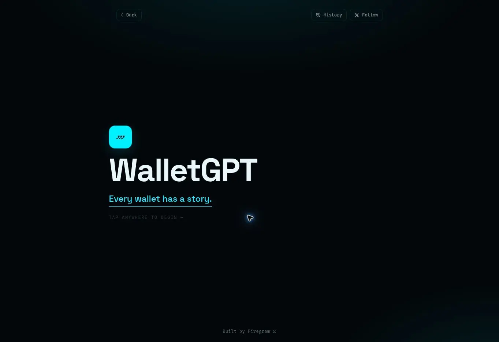
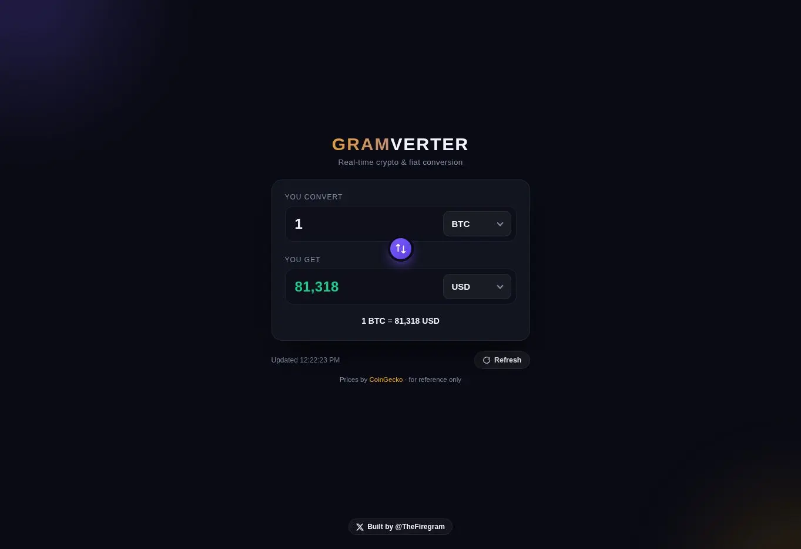
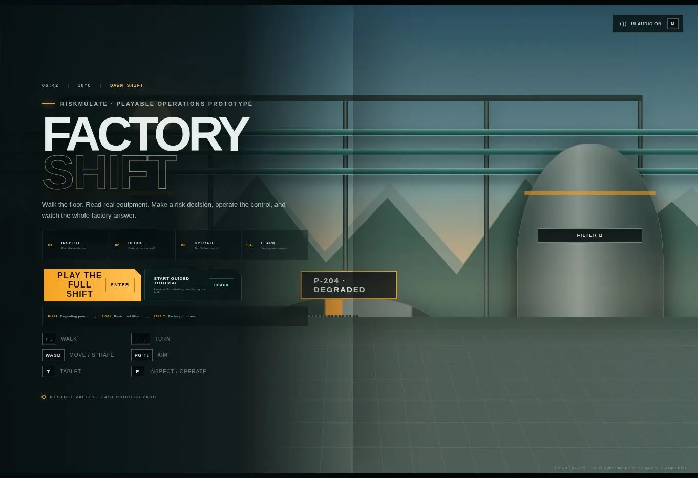

Open projectWalletGPT / Web app01
WalletGPT
An AI chat app that explains wallet activity in plain language.
Firegram / Independent builder
I create AI images and videos.
I manage projects and online communities.
01 / About me
Olayemi Qudus / FiregramI build web apps and use AI to create images and videos. I manage online communities and help teams plan and deliver projects.
Design and build tools that people can use in a browser.
Create images and videos. Teach people how to use AI tools.
Support members, lead moderators, and run online events.
Set priorities, plan tasks, and coordinate the team.
02 / Proof of work
Web apps & project recordsTry the apps.
Read the project records.

Open projectWalletGPT / Web appAn AI chat app that explains wallet activity in plain language.

Open projectConvert crypto and fiat currencies with current market data.

Open projectA 3D risk simulation in your browser. Inspect equipment, assess risks, and choose controls.
Apps, AI content, teaching, and community work.
03 / Experience
Project and community roles since 2019.
Apehattan City
I plan projects, coordinate the team, and set work standards. Promoted from Community Manager.
Apehattan City
I managed Telegram, Discord, and X. I led moderators, hosted AMAs and Spaces, and tracked member feedback.
SHIBU Doge Mascot
I helped with project plans, content, member support, and outreach.
Wallchain Labs
I supported a community of more than 3,000 members with product help and scam prevention.
OkayGuy / BankCrash / MusicToken / SITDAO
I managed daily community tasks and answered member questions.
04 / Contact
Send a short brief for a web app, AI content, or community work.
Send an email